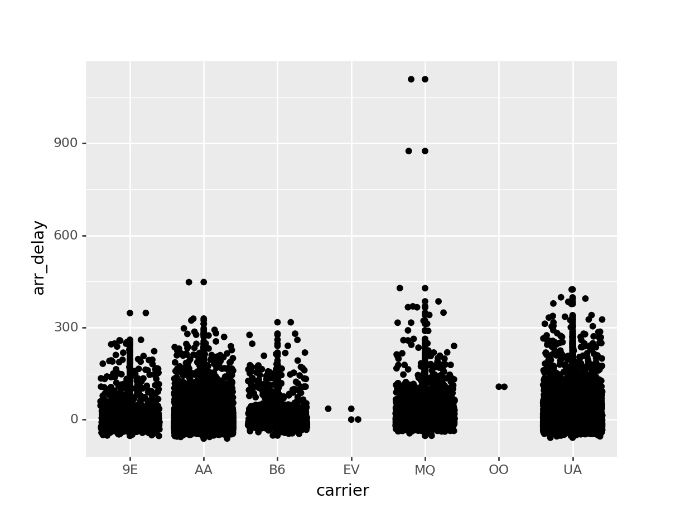
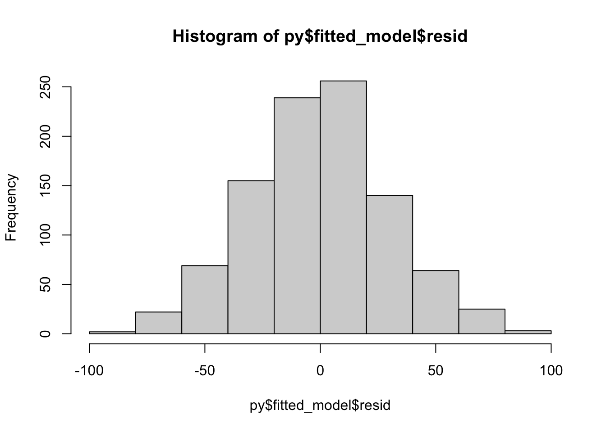
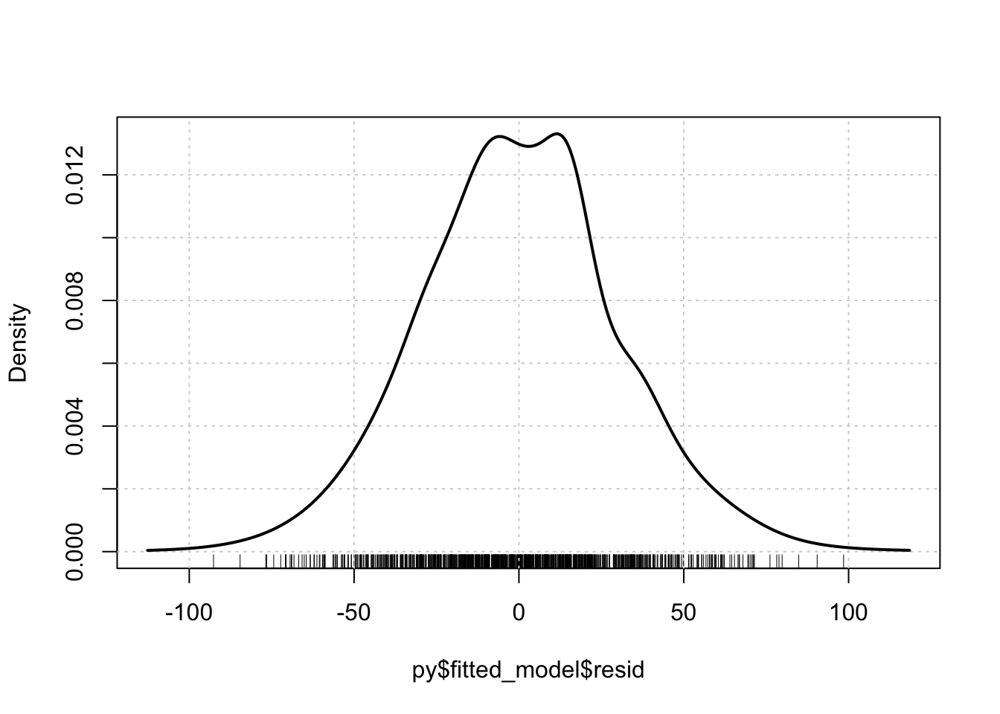
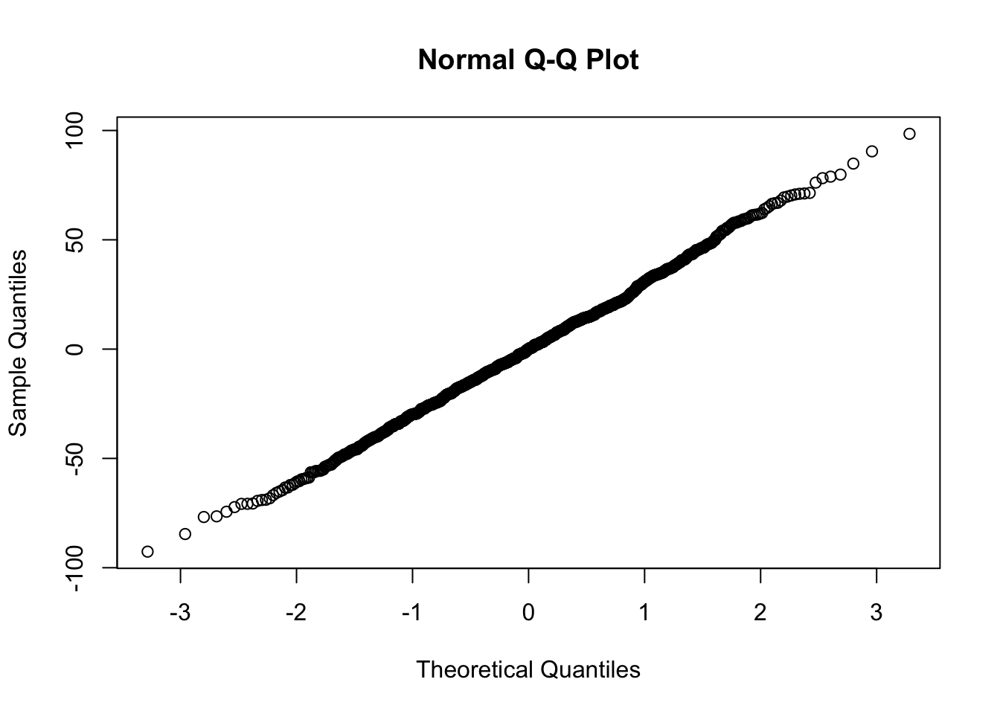
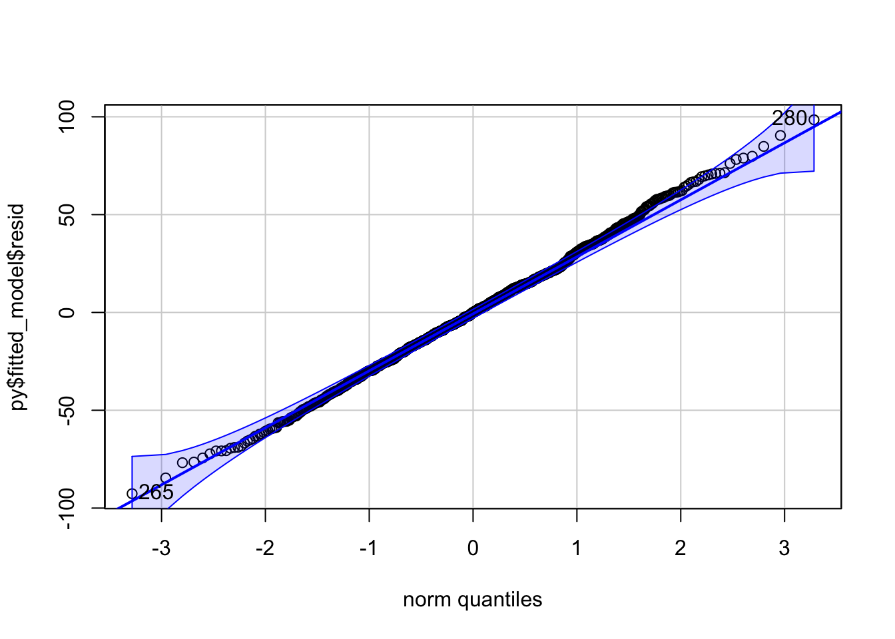

Programación conjunta en R y Python con reticulate
Justificación
En este apartado se demuestra cómo los ficheros Quarto (con extensión qmd) o R Markdown (con extensión Rmd) son un buen entorno para codificar un proyecto simultáneamente en los dos lenguajes de programación más usados en Data Science, R y Python, permitiendo programar algunos elementos del proyecto en cada lenguaje y manipular objetos creados en un lenguaje usando el otro, y viceversa.
Esto puede ser útil por varias razones:
- Permite codificar en la lengua nativa de la estadística (R) pero añadiendo características que podrían existir sólo en la segunda lengua (Python); o al contrario. Obviamente, cuando se usa la palabra lengua se hace referencia al término lenguaje de programación.
- Permite colaborar directamente con otro colega que sea un experto programador en el otro lenguaje (equipos multi-lenguaje).
- Da la oportunidad de trabajar en ambos lenguajes de programación y de adquirir fluidez en ellos, intentando alcanzar a largo plazo el bilingüismo.
¿Qué se necesita?
Para que la interacción R-Python funcione correctamente se necesita lo siguiente:
- R y Python instalados en el ordenador.
- El entorno de ejecución (IDE) RStudio también instalado.
- La librería
reticulateinstalada en R. Se pueden encontrar todos los detalles de la librería en la página web siguiente: https://rstudio.github.io/reticulate/
Trabajaremos en el IDE de RStudio, escribiendo en un fichero tipo Quarto o R Markdown, moviéndonos entre trozos de código que están escritos en R o en Python.
A continuación se hará una demostración con tres ejemplos sencillos.
Primer ejemplo
A través de este caso se verá fácilmente cómo interactúan R y Python a través de la librería reticulate. Para configurar RStudio y permitir la interacción R-Python simplemente hay que leer la librería para activar ambos lenguajes:
library(reticulate)Cuando se quiera escribir código en Python, se deben envolver las líneas con los habituales signos de puntuación (```), pero etiquetarlo como un trozo de código python usando {python}; y cuando se quiera escribir en R debe usarse {r}.
- Desde Python hacia R
En primer lugar se usa Python para leer y manipular los datos:
import pandas
flights = pandas.read_csv("data/flights.csv")
flights = flights[flights['dest'] == "ORD"]
flights = flights[['carrier', 'dep_delay', 'arr_delay']]
flights = flights.dropna()
flights carrier dep_delay arr_delay
5 UA -4.0 12.0
9 AA -2.0 8.0
25 MQ 8.0 32.0
38 AA -1.0 14.0
57 AA -4.0 4.0
... ... ... ...
336645 AA -12.0 -37.0
336669 UA -7.0 -13.0
336675 MQ -7.0 -11.0
336696 B6 -5.0 -23.0
336709 AA -13.0 -38.0
[16566 rows x 3 columns]flights.describe() dep_delay arr_delay
count 16566.000000 16566.000000
mean 13.432814 5.876615
std 42.708837 48.008944
min -20.000000 -62.000000
25% -5.000000 -20.000000
50% -2.000000 -8.000000
75% 11.000000 13.000000
max 1126.000000 1109.000000Ahora se usa R para visualizar los datos guardados en Python (en formato Pandas DataFrame):
library(ggplot2)
ggplot(py$flights, aes(carrier, arr_delay)) + geom_point() + geom_jitter()
- Desde R hacia Python
Primero se usa R para leer y manipular los datos:
library(tidyverse)
flights <- read_csv("data/flights.csv") %>%
filter(dest == "ORD") %>%
select(carrier, dep_delay, arr_delay) %>%
na.omit()
head(flights)# A tibble: 6 × 3
carrier dep_delay arr_delay
<chr> <dbl> <dbl>
1 UA -4 12
2 AA -2 8
3 MQ 8 32
4 AA -1 14
5 AA -4 4
6 UA 9 20tail(flights)# A tibble: 6 × 3
carrier dep_delay arr_delay
<chr> <dbl> <dbl>
1 9E 4 -2
2 AA -12 -37
3 UA -7 -13
4 MQ -7 -11
5 B6 -5 -23
6 AA -13 -38summary(flights) carrier dep_delay arr_delay
Length:16566 Min. : -20.00 Min. : -62.000
Class :character 1st Qu.: -5.00 1st Qu.: -20.000
Mode :character Median : -2.00 Median : -8.000
Mean : 13.43 Mean : 5.877
3rd Qu.: 11.00 3rd Qu.: 13.000
Max. :1126.00 Max. :1109.000 Y luego se usa Python para visualizar los datos guardados en R (en formato R DataFrame):
from plotnine import *
(ggplot(r.flights, aes(x="carrier", y="arr_delay")) + geom_point() + geom_jitter())<ggplot: (303830728)>
Segundo ejemplo
En este ejemplo se va a estimar en Python una regresión con un conjunto de datos sobre las calificaciones finales de Grado de los estudiantes en función de sus resultados en los diferentes años académicos.
- Debajo se ejecuta Python dentro de este código para estimar el modelo:
import pandas as pd
import statsmodels.formula.api as smf
# Datos
ugtests = pd.read_csv("data/ugtests.csv")
# Modelo
model = smf.ols(formula = "Final ~ Yr3 + Yr2 + Yr1", data = ugtests)
# Estimación del modelo y resultados
fitted_model = model.fit()
model_summary = fitted_model.summary()
print(model_summary) OLS Regression Results
==============================================================================
Dep. Variable: Final R-squared: 0.530
Model: OLS Adj. R-squared: 0.529
Method: Least Squares F-statistic: 365.5
Date: Tue, 07 Nov 2023 Prob (F-statistic): 8.22e-159
Time: 06:55:28 Log-Likelihood: -4711.6
No. Observations: 975 AIC: 9431.
Df Residuals: 971 BIC: 9451.
Df Model: 3
Covariance Type: nonrobust
==============================================================================
coef std err t P>|t| [0.025 0.975]
------------------------------------------------------------------------------
Intercept 14.1460 5.480 2.581 0.010 3.392 24.900
Yr3 0.8657 0.029 29.710 0.000 0.809 0.923
Yr2 0.4313 0.033 13.267 0.000 0.367 0.495
Yr1 0.0760 0.065 1.163 0.245 -0.052 0.204
==============================================================================
Omnibus: 0.762 Durbin-Watson: 2.006
Prob(Omnibus): 0.683 Jarque-Bera (JB): 0.795
Skew: 0.067 Prob(JB): 0.672
Kurtosis: 2.961 Cond. No. 858.
==============================================================================
Notes:
[1] Standard Errors assume that the covariance matrix of the errors is correctly specified.- En este momento has tenido que dejar este trabajo debido a algo más urgente y se lo has pasado a otro colega que sólo programa en R para que él haga algunos diagnósticos del modelo estimado. Pues bien, el nuevo programador puede acceder a todos los objetos Python que se han creado anteriormente dentro de una lista general llamada
pyen el entorno R.
Así, si escribe un cógigo R como el que sigue puede acceder a los parámetros del modelo estimado:
py$fitted_model$params Intercept Yr3 Yr2 Yr1
14.14598945 0.86568123 0.43128539 0.07602621 o ralizar unas estadísticas básicas y un histograma de los residuos (errores estimados del modelo):
summary(py$fitted_model$resid) Min. 1st Qu. Median Mean 3rd Qu. Max.
-92.63812 -20.34864 0.00081 0.00000 18.95411 98.48933 hist(py$fitted_model$resid)
Además, puede hacer fácilmente algunos diagnósticos más sofisticados usando la librería car:
library(car)
densityPlot(py$fitted_model$resid)
qqnorm(py$fitted_model$resid)
qqPlot(py$fitted_model$resid)
280 265
281 266 Tercer ejemplo
Supongamos ahora que se han estado analizando algunos datos en Python y se ha creado un dataframe de la librería pandas con todos ellos. Vamos a cargar los datos y echarles un vistazo:
import pandas as pd
speed_dating = pd.read_csv("data/speed_dating.csv")
print(speed_dating.head()) iid gender match samerace race goal dec attr intel prob agediff
0 1 0 0 0 4.0 2.0 1 6.0 7.0 6.0 6.0
1 1 0 0 0 4.0 2.0 1 7.0 7.0 5.0 1.0
2 1 0 1 1 4.0 2.0 1 5.0 9.0 NaN 1.0
3 1 0 1 0 4.0 2.0 1 7.0 8.0 6.0 2.0
4 1 0 1 0 4.0 2.0 1 5.0 7.0 6.0 3.0Supongamos que se estima una regresión logística simple en Python para intentar relacionar la variable decisión dec en función de algunas de las otras variables de la base de datos:
import pandas as pd
import statsmodels.api as sm
import statsmodels.formula.api as smf
# Datos
speed_dating = pd.read_csv("data/speed_dating.csv")
# Modelo
model = smf.glm(formula = "dec ~ agediff + samerace + attr + intel + prob",
data = speed_dating,
family = sm.families.Binomial())
# Estimación del modelo
promotion_model = model.fit()
# Resultados
print(promotion_model.summary()) Generalized Linear Model Regression Results
==============================================================================
Dep. Variable: dec No. Observations: 7789
Model: GLM Df Residuals: 7783
Model Family: Binomial Df Model: 5
Link Function: Logit Scale: 1.0000
Method: IRLS Log-Likelihood: -4041.5
Date: Tue, 07 Nov 2023 Deviance: 8082.9
Time: 06:55:30 Pearson chi2: 8.04e+03
No. Iterations: 5 Pseudo R-squ. (CS): 0.2805
Covariance Type: nonrobust
==============================================================================
coef std err z P>|z| [0.025 0.975]
------------------------------------------------------------------------------
Intercept -5.8129 0.184 -31.534 0.000 -6.174 -5.452
agediff -0.0105 0.009 -1.165 0.244 -0.028 0.007
samerace -0.0934 0.056 -1.677 0.094 -0.203 0.016
attr 0.6611 0.019 34.111 0.000 0.623 0.699
intel -0.0045 0.021 -0.216 0.829 -0.045 0.036
prob 0.2706 0.015 18.575 0.000 0.242 0.299
==============================================================================Sin embargo, alguien se da cuenta de que estos datos son en realidad jerárquicos ya que el mismo iid individual puede tener múltiples fechas, así que es necesario estimar un modelo de regresión logística de efectos mixtos, ¡pero nadie es capaz de encontrar una librería en Python que lo haga! Sin embargo, para un colega especializado en R es fácil estimar ese tipo de modelos con la librería lme4:
library(lme4)
speed_dating <- py$speed_dating
iid_intercept_model <- lme4:::glmer(dec ~ agediff + samerace + attr + intel + prob + (1 | iid), data = speed_dating, family = "binomial")
summary(iid_intercept_model)Generalized linear mixed model fit by maximum likelihood (Laplace
Approximation) [glmerMod]
Family: binomial ( logit )
Formula: dec ~ agediff + samerace + attr + intel + prob + (1 | iid)
Data: speed_dating
AIC BIC logLik deviance df.resid
6420.3 6469.0 -3203.1 6406.3 7782
Scaled residuals:
Min 1Q Median 3Q Max
-25.6968 -0.3644 -0.0606 0.3608 25.0370
Random effects:
Groups Name Variance Std.Dev.
iid (Intercept) 5.18 2.276
Number of obs: 7789, groups: iid, 541
Fixed effects:
Estimate Std. Error z value Pr(>|z|)
(Intercept) -12.88885 0.42149 -30.579 < 2e-16 ***
agediff -0.03671 0.01401 -2.621 0.00877 **
samerace 0.20186 0.08140 2.480 0.01314 *
attr 1.07895 0.03334 32.361 < 2e-16 ***
intel 0.31592 0.03473 9.097 < 2e-16 ***
prob 0.61998 0.02873 21.580 < 2e-16 ***
---
Signif. codes: 0 '***' 0.001 '**' 0.01 '*' 0.05 '.' 0.1 ' ' 1
Correlation of Fixed Effects:
(Intr) agedff samerc attr intel
agediff -0.098
samerace -0.103 -0.048
attr -0.646 0.003 0.008
intel -0.641 -0.030 0.055 0.049
prob -0.502 -0.003 -0.025 0.266 -0.008coefficients <- coef(iid_intercept_model)$iidAhora se pueden recuperar los resultados en Python y echar un vistazo a las estimaciones de los coeficientes, por ejemplo. Para acceder a los objetos de R en Python se utiliza el objeto de lista general r.
coefs = r.coefficients
print(coefs.head()) (Intercept) agediff samerace attr intel prob
1 -10.573307 -0.03671 0.201863 1.078946 0.31592 0.619976
2 -13.612416 -0.03671 0.201863 1.078946 0.31592 0.619976
3 -18.188261 -0.03671 0.201863 1.078946 0.31592 0.619976
4 -14.473331 -0.03671 0.201863 1.078946 0.31592 0.619976
5 -10.893444 -0.03671 0.201863 1.078946 0.31592 0.619976